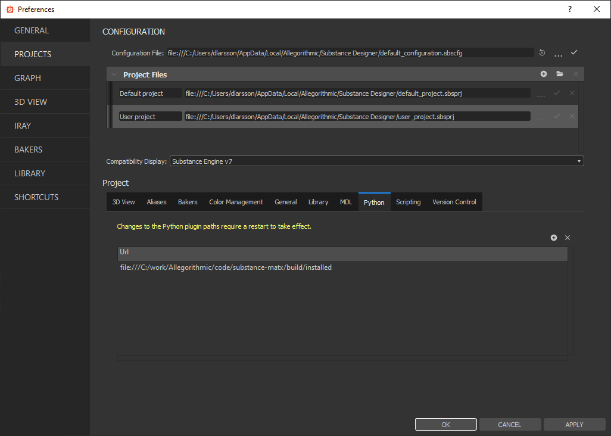
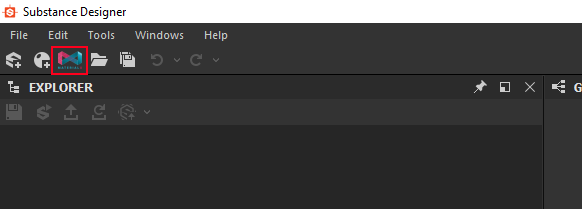
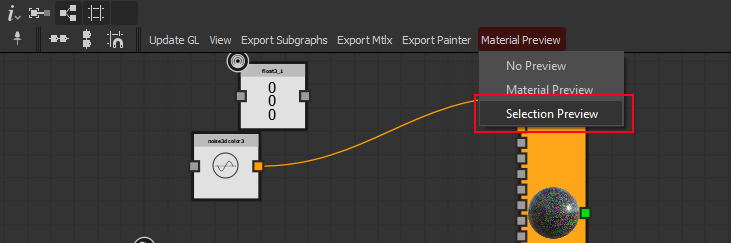

MaterialX plugin for Substance Designer
The Substance Designer MaterialX plugin allows creating MaterialX graphs from Substance Designer. This is an experimental plugin and it doesn't intend to support everything and takes certain short cuts. This means you should be cautious using it in a production setting at this point.
The plugin allows you to build MaterialX Graphs and export them.
To install the plugin, copy the plugin directory to the
sduserplugins
directory. It's
typically located in
c:\Users\<USERNAME>\Documents\Allegorithmic\Substance Designer\python\sduserplugins
You can also place it in a custom location and add that directory to the python plugin paths.
If you have an old version of the plugin installed, remove it before starting to avoid any old files causing
issues. The only thing you might want to preserve is data/config/sdmatxplugin-config.json if you have edited it.
In order for the plugin to work the directory it's installed in needs to be writable from Substance designer
After installing the plugin you'll need to install the Python 3.7 version of MaterialX 1.37.2. Prebuilt packages for Windows can be found from the MaterialX Github . Note that we strive to always support the latest master build but in general it's safer to use the specific link above to make sure no recently introduced change break things.
You can either put it at a location of your choice
and point the environment variable
MATERIALX_ROOT
to it or put the content of the
package in the directory
MaterialX
in the materialx designer plugin directory.
If working on Linux/Mac you need to build your own MaterialX package
When the plugin is installed with MaterialX, open Substance Designer and make sure the plugin location is set as a python plug-in directory. Note, the plugin directory should be a descendant of the plugin directory you add as opposed to adding the directory with the plugin directly.

After changing the path, restart Designer for the update to be acknowledged.
When the plugin is properly installed the directory layout should look like this (contents of deeper directories
cropped out):
sdmatxplugin
├── MaterialX
│ ├── bin
│ ├── cmake
│ ├── include
│ ├── lib
│ ├── libraries
│ ├── python
│ └── resources
├── data
├── doc
└── python
In case of a successful plugin installation a new toolbar button will show up looking like this:

The samples can be found in
sdmatxplugin/data/samples
Create a MaterialX Graph using the toolbar button This will put you in a special version of the MDL editor where all the nodes are from MaterialX standard library with the exception of some helper nodes we'll explain below.
The first node you want to adding an ubershader. The main supported one today is standard surface. Press tab, search for standard_surface , create it and then set it as root by right clicking on it and selecting that option from the menu. The standard surface material model is extensive, the implementation in the Substance Designer plugin is somewhat limited, the details are here, Standard Surface Limitations
Now, make sure your viewport is set to iRay . Right click on the graph in the designer explorer or in the back of the graph editor and select Set as Material Definition in 3D View . If everything is working you should have a plain white object in the viewport
You can tweak the parameters but to see something more exciting you can create a noise node called noise_3d_color3 and connect it to the base color. This will now show you a procedurally generated pattern on your node
From here you can experiment with nodes. Everything available in the graph are MaterialX Nodes.
Exposing parameters works like in the ordinary mdl editor. You create a constant and select exposed on it. This means they can be tweaked externally and will end up in the public interface if the material you are working on.
In order to get a consistent behavior between the iRay and GL viewport the recommended place to tweak parameters is from the MaterialX graph properties. Double click in the background of the graph editor or select the graph in the explorer to get to it.
To bind textures to a graph in a way that is compatible with both GL and iRay, Expose a usage with the Sampler Usage set on it. Note that other ways of binding textures such as referencing resources and directly introducing comp graphs into the MaterialX graph are not supported and may give undefined behavior at this point.
If creating a color constant, expose it and set its Sampler Usage as baseColor it will be exposed as a texture input rather than a color.
In order to bind a texture to it in designer, create a comp graph with a baseColor output right click on it and select View Outputs in 3d view or drag it to the viewport you are working in. Note that in the case of an exposed color the UV used is always UV 0 which is often what you want.
Another thing to note here is if binding textures from an sbsar file (as opposed) to an sbs file you need to import it into a compositing graph and connect the outputs to the outputs. It's unfortunately not possible to render the textures directly from the sbsar file in Designer.
In case you want to take control of the UV generation yourself, create a texture_2d node and expose it instead. In order to sample from it you can use the image family of nodes. They have a UV input so you can tile or select different sources of UV's.
In general you want to sample color textures using sRGB as Gamma Type and all other textures as Gamma Linear . For the GL Viewport gamma type is only active on Color textures. For vector and float types they will always be considered linear regardless of what the setting says.
There is a default behavior for converting directly exposed float3 as normal maps to world space which is inconsistent between the GLSL viewport and the iRay viewport.
For normal maps, please use
The MaterialX plugin can visualize shaders in the GL viewport in addition to the iRay one. In order to set it up, start by switching to the GL viewport.
When using the
standard_surface
shader it will generate a glslfx file in
<pluginroot>/data/shaders/standard_surface_generated.glslfx
which is
incrementally exported as you edit your shader.
Load this file (unfortunately there is not a script api call for doing this meaning you'll have to do it manually for now). If it succeeds it should show the shader, potentially with incorrect textures. Drag the comp graph you want to bind textures from into the viewport and you should have OpenGL preview of your shader.
When using the OpenGL viewport there is a debug mode allowing you to visualize the currently selected node instead of the root node. It's available in the MaterialX editor toolbar (note, this doesn't work when using iRay).

Swizzle patterns are described as a string and supports rgba/xyzw. To duplicate x 3 times in a 3 vector, input the string xxx
Types map generally between MDL and MaterialX but there are some differences
Currently there has been no ambition to try to map all MDL types accurately to MaterialX but only support what is needed to get the standard library working
When pressing the
Export Painter
button a glsl file compatible with Painter
in generated the
The known usages in designer that are mapped to the appropriate texture sets are:
_usage_mapping = {
'ambientOcclusion': 'channel_ambientocclusion',
'anisotropyAngle': 'channel_anisotropyangle',
'anisotropyLevel': 'channel_anisotropylevel',
'baseColor': 'channel_basecolor',
'blendingmask': 'channel_blendingmask',
'diffuse': 'channel_diffuse',
'displacement': 'channel_displacement',
'emissive': 'channel_emissive',
'glossiness': 'channel_glossiness',
'height': 'channel_height',
'IOR': 'channel_ior',
'metallic': 'channel_metallic',
'normal': 'channel_normal',
'opacity': 'channel_opacity',
'reflection': 'channel_reflection',
'roughness': 'channel_roughness',
'scattering': 'channel_scattering',
'specular': 'channel_specular',
'specularLevel': 'channel_specularLevel',
'transmissive': 'channel_transmissive',
'user0': 'channel_user0',
'user1': 'channel_user1',
'user2': 'channel_user2',
'user3': 'channel_user3',
'user4': 'channel_user4',
'user5': 'channel_user5',
'user6': 'channel_user6',
'user7': 'channel_user7',
'texture_ambientocclusion' : 'texture_ambientocclusion',
'texture_curvature':'texture_curvature',
'texture_id':'texture_id',
'texture_normal':'texture_normal',
'texture_normal_ws':'texture_normal_ws',
'texture_position':'texture_position',
'texture_thickness':'texture_thickness'
}
The usages prefixed texture_ are referring to baked mesh maps.
In order to use the shader in painter, import the generated glsl file to your project and set it as the active shader in the project.
Exports the graph as a MaterialX, optionally with all dependencies and resources.
Opens up MaterialXView with the current Graph. Note, you need to explicitly select what graph to export textures from.
Subgraphs is an experimental feature.
It allows creating functions to be used in other graphs. All subgraphs are namespaced based on the substance file it's located in so multiple graphs in the same document can be exported together.
To create a subgraph:
When doing this, the subgraphs in the document will be exported to the directories
<Userdocs>/Allegorithmic/Substance Designer/sdmatx/mtlx
and
<Userdocs>/Allegorithmic/Substance Designer/sdmatx/mdl
for the MaterialX definition
and mdl definitions respectively. Substance Designer doesn't allow reloading MDL defintions
so you need to restart designer when re-exporting a subgraph. The one exception to this
rule is if you are only interested in the MaterialX/GLSL version where you can skip the
restart assuming:
These are features that are not fully supported but mentioned here for advanced users that are not afraid of experimenting with the Python scripts directly. Get in touch with us in case you run into any issues doing these things and we'd be happy to help out getting things right.
If you have your own set of MaterialX nodes you want to use inside of the Designer MaterialX editor you need to make sure they are found by designer and properly converted to MDL definitions. The MDL conversion is still limited and it only supports single return value functions and a limited set of types. The key things to get this right is:
sdmatxplugin/python/sdmatx/paths.py
sdmatxplugin/__init__.py
sdmatxplugin/data/mdl/matx
except utilities.mdl (which is handwritten) to trigger a rebuilding the libraries next
time Designer is restarted.
The MaterialX graph can support multiple ubershaders but at the moment the only
properly implemented one is standard surface from Autodesk.
In order to add support for your own Ubershader you need to produce a GLSLFX template
and a GLSL root shader.
Let's say you are looking to create a shader with a node type called
my_shader
.
First it needs to be created as a shader in MaterialX and imported as described in the
previous topic so it's available from designer.
You need create the following files:
When the code generation hits the shader it will look up the template named
It will also generate a file caled
sdmatxplugin/data/shaders/my_shader/matx.glsl
which contains the entry point called
matx_compute
for generating all the
inputs for the ubershader. Its interface is defined by the node def in MaterialX.
In order to use the generated function, include it in the fs_modular.glsl and call it from the main function and use the generated values to drive your lighting calculations. The best starting point is looking at the standard_surface implementation inside of the plugin.
For more information on the Designer Shader API, check out: Designer Shader API
Substance Painter has a different way of implementing GLSL shaders and the mechanism is
putting a template file inside of
sdmatxplugin/data/painter/my_shader_template.glsl
In the painter case most of the code is generated for you including the outputs of the
procedural part of the shader. The contents of the template file will be glued in
for you in the generated shader. Your job is to use these values and drive the shading
from this. The easiest way to get this right is looking at what happens with the
standard_surface shader that comes with the plugin.
For more information on the Painter Shader API, check out: Painter Shader API
Different applications and applications uses different coordinate systems. For the provided material ball model as of 0.1.3, the object space should align with the object space for the same model in Substance Designer.
Substance Designer supports world and object space coordinates for positions/normals The object space is the untransformed mesh as it is in the scene graph, the world is the transformed mesh
Substance Painter has no notion of object space so it uses the same coordinate system for World and Object space and it's what maps to the Designer world coordinate system.
MaterialX view uses OBJ files which has no notion of transform. The Object space is defined as the coordinate system in the mesh, world space is sometimes different since the user can transform the object in various ways.